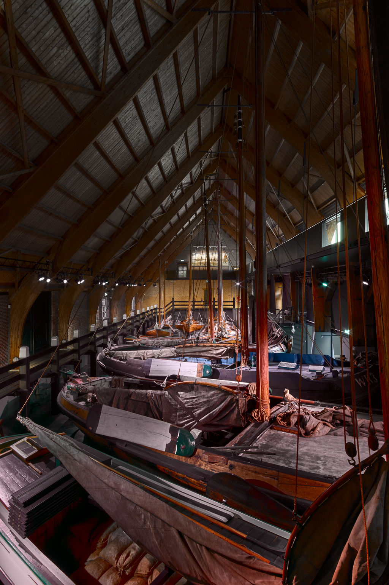

Het Zuiderzeemuseum in Enkhuizen brengt de verhalen tot leven van mensen die vroeger rond de Zuiderzee woonden. Zie, hoor, voel, proef en ruik het dagelijkse leven rond de Zuiderzee, voordat de Afsluitdijk in 1932 de Zuiderzee veranderde in het IJsselmeer. Het Zuiderzeemuseum richt zich op de geschiedenis, actualiteit en toekomst van het gebied. De thema’s water, ambacht en gemeenschappen staan centraal. In het buitenmuseum met historische gebouwen en het binnenmuseum met thematische tentoonstellingen wordt dit verhaal zichtbaar gemaakt.
Hier onder vind je 6 kenmerken van het museum
Link naar de Zuiderzee museum website: de website van het Zuiderzee museum
